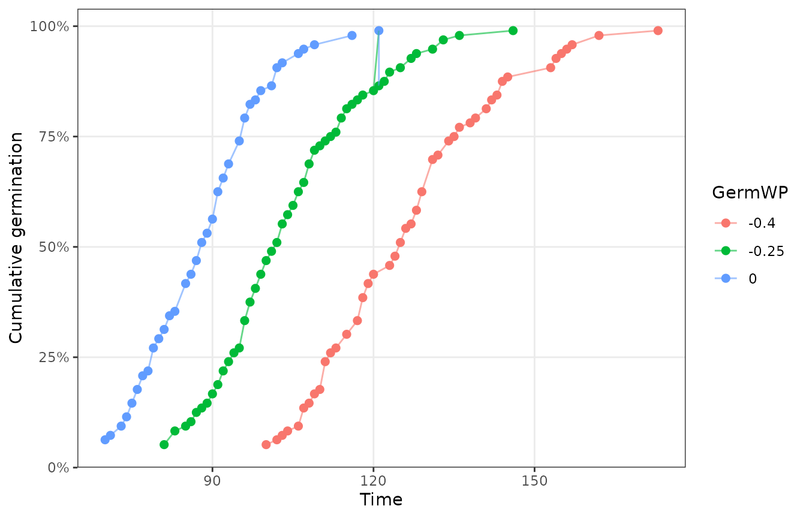
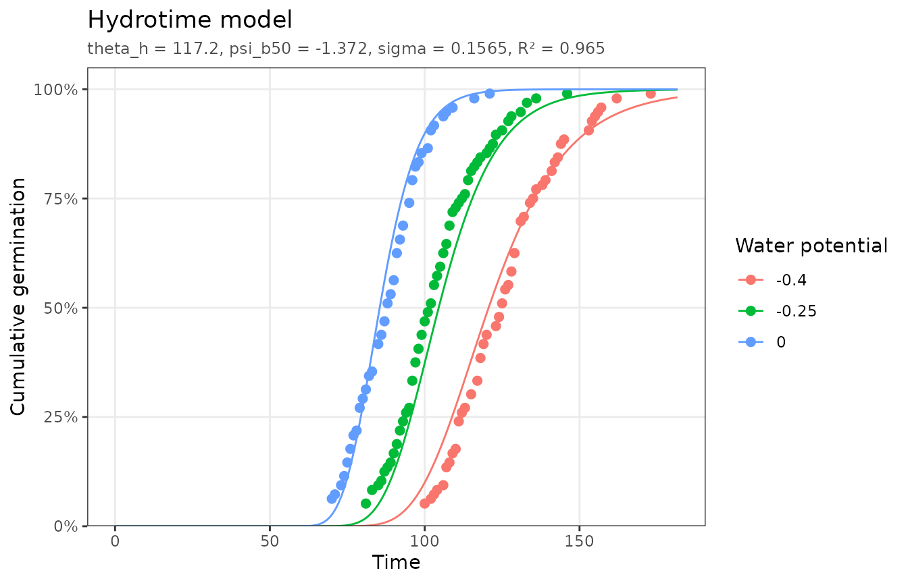
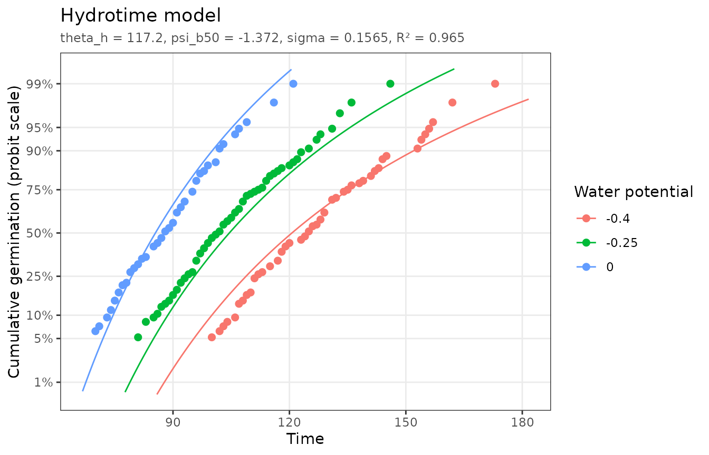
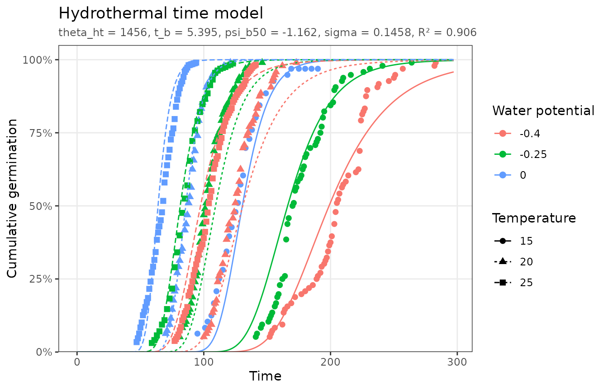
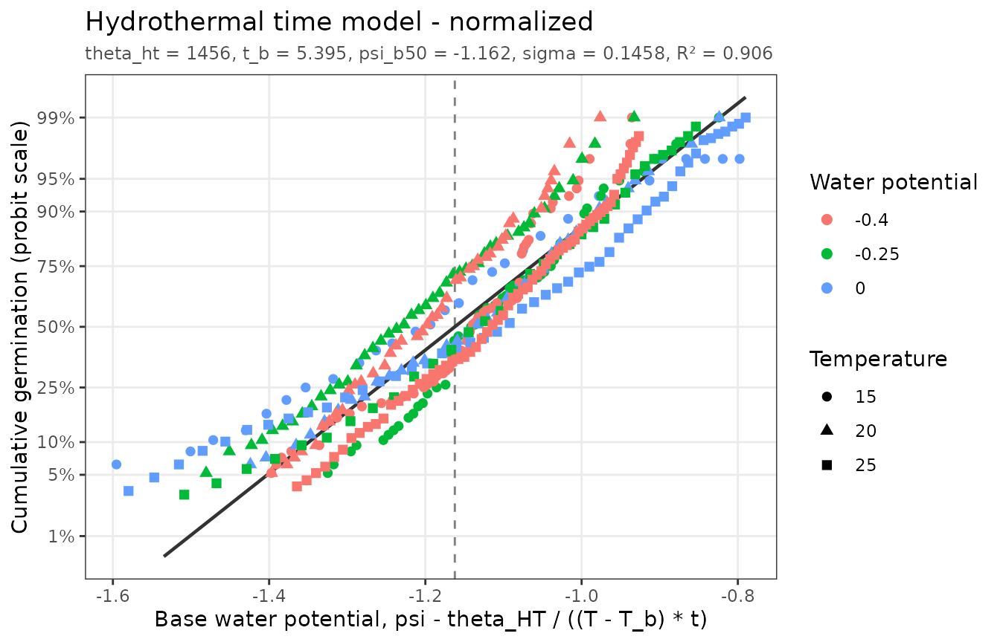

Hydrotime
Seeds germinate more slowly, and fewer of them germinate, as the water potential of their surroundings decreases. The hydrotime model (Gummerson, 1986; Bradford, 1990) states that the hydrotime to germination is constant:
where
is the time to germination of fraction g. The base water
potential
,
below which a seed cannot germinate, varies normally across the
population with median
and standard deviation
.
Solving for the germinated fraction gives the fitted model:
hydrotime_data has tomato seeds germinated at 20 °C and
three water potentials. Hydrotime data should come from a single
temperature; filter other temperatures out first.
plot_germ_data(hydrotime_data, color = "GermWP")
fit_ht <- fit_hydrotime(hydrotime_data)
fit_ht
#> <pbtm_fit> Hydrotime model
#>
#> theta_h psi_b50 sigma
#> 117.2 -1.372 0.1565
#>
#> n = 125, pseudo-R2 = 0.9649, AIC = -706.8Half the seeds can germinate at water potentials down to -1.37 MPa. The hydrotime constant is 117 MPa·h.
autoplot(fit_ht)
On a probit fraction axis the fitted curves become nearly straight. The normalized plot places every observation at the base water potential implied by its germination time, . All water potentials then fall on one line, the population’s distribution of :
autoplot(fit_ht, y_scale = "probit")
autoplot(fit_ht, type = "normalized")
The median germination time at any water potential above is :
p <- coef(fit_ht)
wp <- c(0, -0.25, -0.4)
data.frame(GermWP = wp, predicted_t50 = p[["theta_h"]] / (wp - p[["psi_b50"]]))
#> GermWP predicted_t50
#> 1 0.00 85.46279
#> 2 -0.25 104.50754
#> 3 -0.40 120.63743
germ_speed(hydrotime_data, 0.5, groups = "GermWP")
#> # A tibble: 3 × 4
#> GermWP Fraction Time GR
#> <dbl> <dbl> <dbl> <dbl>
#> 1 -0.4 0.5 125. 0.00802
#> 2 -0.25 0.5 102. 0.00985
#> 3 0 0.5 116. 0.00861The predictions are close to the observed medians at -0.25 and -0.4 MPa. In this example dataset, however, the seeds in water (0 MPa) germinated more slowly than those at -0.25 MPa, contrary to the model. The normalized plot above shows this: the 0 MPa points fall to the right of the line in its upper half, and the treatments do not collapse perfectly onto it. Departures like this are worth checking against the experimental records before drawing conclusions from the parameters.
Hydrothermal time
The hydrothermal time model combines the thermal and hydrotime models to describe germination across both temperature and water potential (Gummerson, 1986; Bradford, 1995):
hydrothermal_time_data crosses three temperatures with
three water potentials:
fit_htt <- fit_hydrothermal_time(hydrothermal_time_data)
fit_htt
#> <pbtm_fit> Hydrothermal time model
#>
#> theta_ht t_b psi_b50 sigma
#> 1456 5.395 -1.162 0.1458
#>
#> n = 398, pseudo-R2 = 0.906, AIC = -1843
autoplot(fit_htt)
The normalized plot uses both estimated constants, and , to put all nine treatments on a common base water potential scale:
autoplot(fit_htt, type = "normalized")
Systematic departures from a single line, for example one temperature lying consistently above the others, show where the assumption of a constant distribution across temperatures breaks down. In practice often shifts with temperature, particularly above the optimum.
References
Bradford, K.J. (1990) A water relations analysis of seed germination rates. Plant Physiol. 94: 840–849. https://doi.org/10.1104/pp.94.2.840
Bradford, K.J. (1995) Water relations in seed germination. In J Kigel, G Galili, eds, Seed Development and Germination. Marcel Dekker, New York, pp 351–396.
Gummerson, R.J. (1986) The effect of constant temperatures and osmotic potentials on the germination of sugar beet. J. Exp. Bot. 37: 729–741.